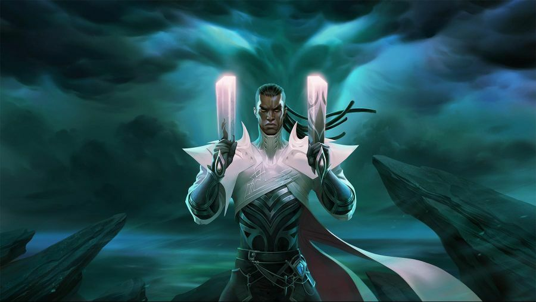

2020 시즌 리그 오브 레전드 랭크는 현지 서버 시간 2020년 11월 10일 00시 00분 01초 챔피언 선택창 이후 로딩 화면에 진입한 게임까지 집계됩니다.
보상은 11월 10일 00시 01분 01초 까지 달성한 티어에 따라 정해지며, 시즌 동안 달성한 최고 티어가 아닌 시즌이 끝나는 시점(위에 명시된 마지막 게임 포함)의 티어로 집계됩니다. 랭크 종료 시점 전에 랭크 게임 휴면 상태 또는 강등으로 인해 티어가 변경되면 해당 티어가 집계됩니다. 랭크 게임 휴면 상태일 가능성이 있다면 보상을 놓치지 않도록 게임을 한 번 플레이하세요.
골드 이상을 달성하면 승리의 루시안 스킨을 보상으로 받을 수 있으며, 챔피언을 보유하고 있지 않은 경우 챔피언이 스킨과 함께 지급됩니다. 마스터 이상의 티어는 11월 9일 23시 45분에 종료됩니다.그 이후로 완료된 게임은 집계되지 않기 때문에 마스터 티어를 노리고 계신다면 부지런히 플레이해 주세요! 랭크 휴면 상태는 시즌과 함께 종료됩니다.
